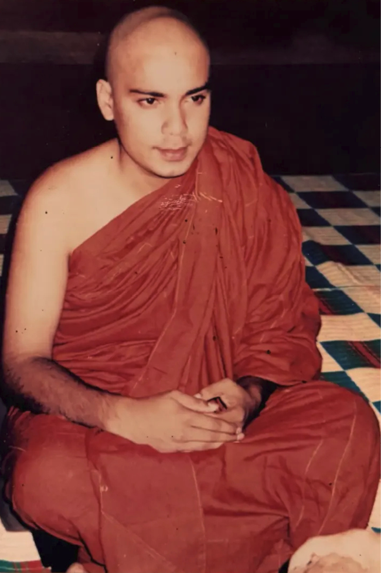
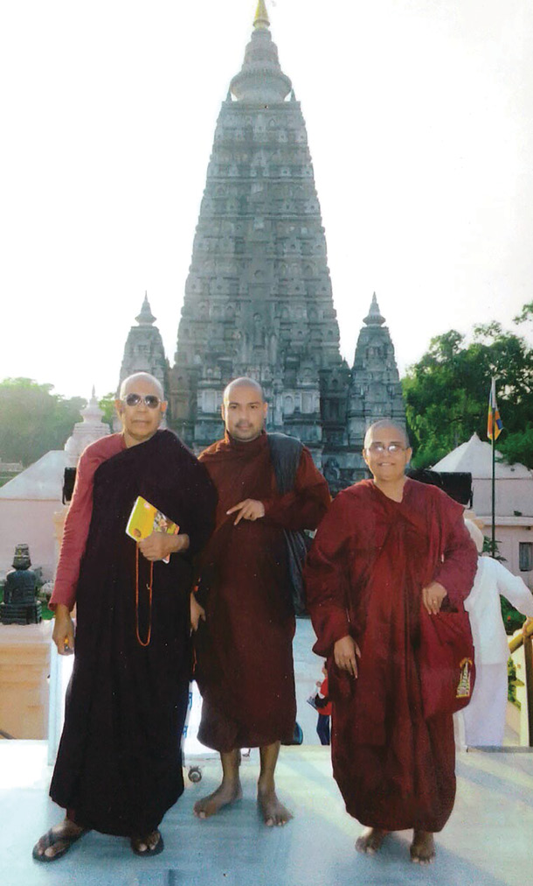
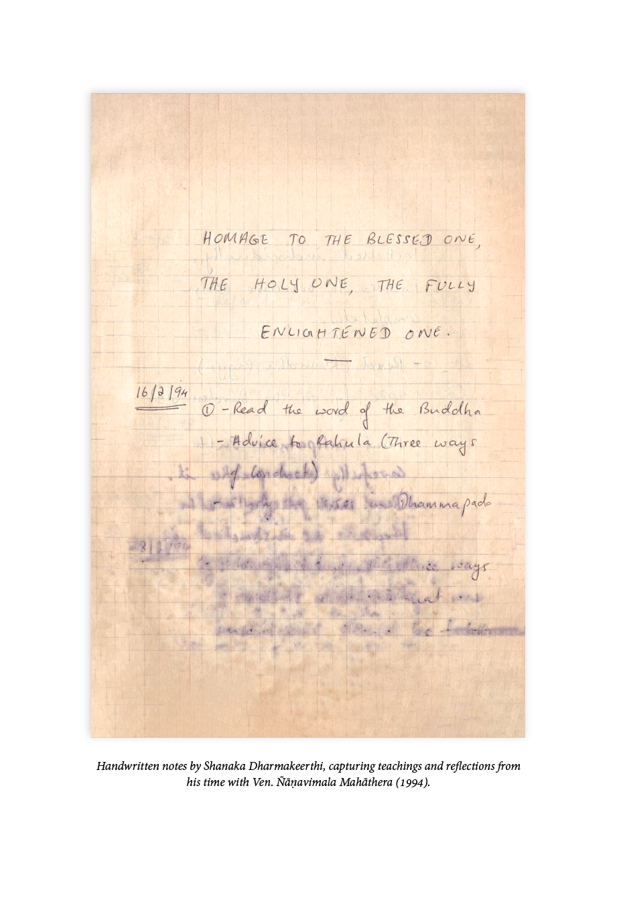

reflection 01
The Makings of a Disciple
Shanaka was born in 1971, during the height of the youth insurrection in Sri Lanka.1 At the time, his parents were living in Anuradhapura, where his father worked as an agricultural engineer.However, his maternal grandfather, a doctor, insisted that Shanaka’s mother travel to Colombo and stay with them until the baby was born. According to his mother, this decision turned out to be a blessing in disguise.
Shanaka came into the world several weeks premature, not in a hospital, but in the backseat of his grandfather’s car, near a Buddha statue, as they were rushing to the hospital. His grandmother, overjoyed, is said to have exclaimed:
“Mage budu putha ipaduna” (“My son, blessed as a Buddha, is born.”)2
Though they may have hoped for a saintly child, what they got was a whirlwind of energy. From his earliest years, Shanaka was rebellious and intense. When his father’s work later took the family to Kandy, he was enrolled at Trinity College, a prestigious private school known for its discipline and refinement. But Shanaka resisted conformity at every turn. He fought, broke rules, and challenged authority. Bruce Lee became his hero. Canings at school were frequent, and at home, his mother struggled to contain his fierce spirit.
Yet one thing stood out, even amidst the chaos: Shanaka’s instinctive reverence for monks. As a foreshadowing of his later path, at around nine years old, in an act of childhood play, he and a friend pretended to be monks, circumambulating a school tree they imagined to be a sacred Bodhi tree. They both thought it would be a good idea to run away from home to become monks, but knew their parents would be against it. The earnest play lasted a couple of days. Then it was back to fighting, back to trouble, the usual boyhood chaos.
His life changed course when his father accepted a foreign assignment in Lesotho, Southern Africa. There, Shanaka’s unchanneled energy found a new outlet in sports, particularly athletics and cricket, where he proved to be a good fast bowler. In athletics he outdid many of his schoolmates to such an extent that they would ask him, “What do you eat?” At the same time, a curiosity about the nature of life began to emerge. He would often walk alone along the Caledon River, contemplating questions of time, space, and existence. Albert Einstein became his new inspiration, and he began to dream of studying astrophysics at Princeton University. The searching did not go unseen. When he eventually left the school, one teacher, a man he remembers as “like a soul connection,” wrote in his leaving recommendation, “Shanaka is searching for a stimulus and a fulfillment beyond what we English call school.”
Entering his teenage years, he was particularly drawn to the theory of relativity—how time slows as one approaches the speed of light. The theory suggested that time was not absolute, but relative.To his mind, this lent credibility to the idea of different planes of existence—something he'd read about in one of his mother's Buddhist books3—where, in the higher planes, days stretch vastly longer and lifespans are measured in eons.
He had learned that mathematically, if something could travel faster than the speed of light, it would go backward in time. He began to relate this to the function of memory, how recalling the past is like going back in time. Meditation and intuition, he theorised, made you go faster and faster, time slowing progressively, like the eon-stretched time of higher planes. And there would be a speed where time would stop.
At eighteen, during one such walk, in a solitary, barren terrain near his house, a question arose:
What are the causes of any phenomenon?
And then, just as instantly, came an insight:
Anything that begins in time definitely ends. There is no beginning for this understanding, therefore there's no end.
The realisation struck him like a flash. All phenomena arise and pass away. This life was fleeting. But this very knowing transcends time. Whatever he was conscious of that had looked solid before now felt like jelly. Even the buildings of Princeton University felt like jelly. The dream began to fade.
In that moment, a picture appeared in his mind—a monk experiencing this very truth. A quiet resolve followed:
I must become like that and make this happen again and again. I must stay in silent places like this.
When he returned home he informed his father that he wanted to ordain. That single sentence sent shockwaves through the family. From that day on, his once restless and fiery manner softened naturally. He walked more intently, ate mindfully and spoke less. His mother, who had a spiritual inclination, supported him wholeheartedly and became his first student.
His father, however, saw it differently. To him, it seemed as though his son was throwing away his future—his education, his cricketing talents, and his worldly potential. Their relationship grew strained. Shanaka knew he had caused pain, and with time, he came to understand just how difficult it must have been for his father to accept. But shortly after this turning point, he met Ven. Ñāṇavimala. The contemplations and experience during his walk by his house would form the ideas that he later shared with Ven. Ñāṇavimala on that day by the roadside.
Had he not met his teacher, Shanaka might have rushed blindly into renunciation, creating more conflict and widening the rift with his father. But Ven. Ñāṇavimala guided him with wisdom and restraint, offering a principle that left a lasting impression:
“Don’t break your sīla4 for anyone—not even for your parents. But short of that, do everything you can to make them happy.”
During one solitary retreat, Shanaka gained deep insight into his karmic ties with his father. The years of his father pushing him—toward expected grades, a life mapped out in advance—and the frustration that came from resisting it. He saw it clearly now: not anyone's fault, but the result of cause and effect. Their relationship was a karmic exchange—why he had become his son and why his father had become his father. It was a kamma they had to reap together. He no longer blamed his father, nor did he blame himself, and a peace overflowed from within when he saw this.
Ven. Ñāṇavimala encouraged harmony, not defiance. He reminded Shanaka that parents are not random strangers; they are beings bound to us through past kamma, who have cared for us
since birth. Following this advice, Shanaka chose to honor his
father’s wishes. He enrolled in business management studies in Cyprus.
Ven. Ñāṇavimala once told him:
“You don’t overcome kamma by changing the environment—you remain equanimous and let it pass.”
These words shaped Shanaka’s approach to challenges. Rather than reacting, he learned to stay centered, to uphold his precepts and let old kamma unfold without adding new layers of conflict.
It would take nearly a decade. He never argued or pleaded with his father. He simply followed his teacher’s guidance: he meditated, studied the Suttas, and undertook silent retreats, both in Sri Lanka and later in India, while continuing to support his parents’ happiness.
As Shanaka continued practicing, he gradually began to understand: when the conditions truly ripen, life itself begins to push a person in that direction. Until then, there are still lessons to be learned, something still left to be understood and exhausted.
He recalled how painful it was to leave his precious stay with Ven. Ñāṇavimala. One time, after worshipping, he held his teacher’s feet before departing. He felt a deep sorrow at having to leave behind the sense of calm and Dhamma atmosphere he had found there. Seeing this, Ven. Ñāṇavimala told him:
“You will be forced to come.”
As his practice matured, those words began to unfold of their own accord. Those who had once opposed him now began to encourage ordination. Quite unexpectedly, the entire environment around him began to change. Relatives and even monks would ask, “When is your son going to ordain?” Shanaka only wished to deepen his practice. He was not yet willing to make the decision to ordain.
Eventually, his father began asking him when he planned to ordain.
His father’s blessing gave Shanaka strength beyond anything he could have imagined. Years later, as Ven. Gnanaloka, during a grueling cārikā through the Knuckles mountain range, he became lost for several days. While trying to ascend a ravine adjacent to Duwili Ella by gripping a hanging root like a rope, he was battered
and injured along the journey. Stings from fever nettle lashed across his body like being whipped, and leeches clung to him in thick clusters. Exhausted, wounded, and without food or water, he wandered through the wilderness alone until he finally encountered a group of cardamom pluckers who treated his injuries and ultimately saved his life. Some later speculated that he must have possessed supernatural powers to survive. But in truth, what sustained him was something much simpler.
A quiet mantra arose in the depths of the forest:
“My father blessed me… My father blessed me.”
That blessing, that acceptance, became his source of strength.
Looking back nearly three decades later, Ven. Gnanaloka sees just how true his teacher’s words were. Ven. Ñāṇavimala once told him:
“The only way to truly help your parents, your relatives, and all beings… is to purify yourself. This will inspire others.”
He was right.
The seeds of Dhamma that Shanaka planted over the years bore extraordinary fruit. His father, who was once his greatest critic, became his greatest supporter, and in time, both parents were inspired to enter the holy life. His father ordained as a monk and passed away as a bhikkhu in 2024. His mother, his very first student, ordained as a nun in early 2025. It was the ultimate testimony of his teacher’s instruction. Ven. Ñāṇavimala had provided the living bridge between the Buddha’s words and the complexities of familial bonds.
The Blessed One had declared that even carrying one’s parents on each shoulder for a hundred years would not repay the debt owed to them.5 His teacher showed him the way to honour that truth. It was not through grand gestures, but through patient conduct, unbroken sīla, and the steady purification of the heart. In following this counsel, Shanaka found that his ordination was not a turning away from his parents, but the highest act of gratitude.
1 In 1971, the Janatha Vimukthi Peramuna (JVP), a Marxist and anti-imperialist youth movement, launched an armed uprising with coordinated attacks on police stations across Sri Lanka. The revolt was crushed within weeks but left thousands dead and many imprisoned.
2 The phrase ‘Budu putha’ (blessed as a Buddha) is a fairly common Sinhalese term of endearment used to express that the child is precious or beloved in a moment of great joy.
3 See Piyadassi Thera, The Spectrum of Buddhism (1988). The collection includes essays on Buddhist cosmology and the relative nature of time across various planes of existence (Loka), drawing parallels to modern physical theories.
4 Sīla (moral conduct): For lay followers, sīla is primarily practiced by observing the Five Precepts: abstaining from killing, stealing, sexual misconduct, false speech, and intoxicants.
5 Samacittavagga (AN2.33; same-minded)

After a decade of close association with Ven. Ñāṇavimala Mahāthera, Shanaka finally entered the monastic life as Ven. Bambalapitiye Gnanaloka Thera, with the full blessings of his parents (Siri Vajiragnana Dharmayathanaya, 19 December 1999).
Ven. Bambalapitiye Gnanaloka Thera’s parents took temporary ordination at
Bodh Gaya, India, in 2015, prior to their formal ordination.

